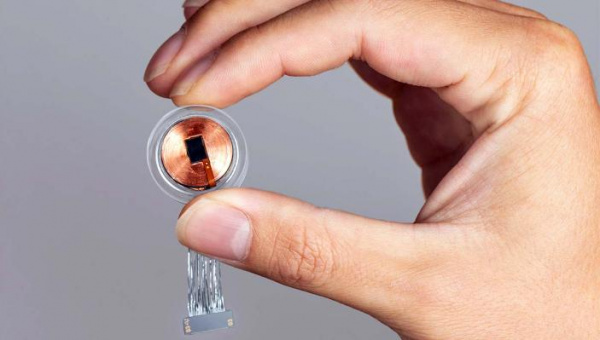

Firefox вслед за Chrome блокирует загрузку большинства FTP-подресурсов
Данное решение связано с недостаточной безопасностью протокола FTP. Инженеры компании Mozilla решили пойти по стопам разработчиков браузера Google Chrome и начать блокировать загрузку FTP-подресурсов на страницах, работающих по протоколам HTTP и HTTPS в программе Firefox. Под FTP-подресурсами подразумеваются файлы, загруженные через протокол FTP в теги img, script или iframe, которые имеют src = "ftp: //". При этом ссылки FTP, размещенные в обычных ссылках с тегом <a> или введенные непосредственно в адресной строке браузера, будут продолжать работать.
Решение связано с недостаточной безопасностью протокола FTP. Он не поддерживает современные методы шифрования и нарушает многие встроенные функции безопасности и конфиденциальности браузеров, такие как HSTS, CSP, XSA и пр.
Помимо этого, многие кампании по распространению рекламного вредоносного ПО часто полагаются на скомпрометированные FTP-серверы и перенаправляют или загружают вредоносы на компьютеры пользователей через подресурсы FTP.
По словам инженеров Mozilla, блокировка FTP-подресурсов появится в версии Firefox 61, выпуск которого запланирован на 26 июня 2018 года. В сентябре минувшего года Google приняла
аналогичное решение. Начиная с Chrome 63, браузер начал блокировать загрузку подресурсов FTP, а также отмечать ссылки FTP, доступные в адресной строке браузера, как небезопасные.
В iOS 15 исправлена серьезная уязвимость.
Уязвимость позволяла вредоносному ПО обходить установленные пользователем настройки безопасности и похищать данные Apple ID.
- Big Data, Machine Learning, Data Science Digest #20
- DASK — твой помощник в Data Science. Разбираем преимущества фреймворка на примерах
- Design digest #10: підсумки 2021, прогнози на 2022 та найважливіше за грудень
- Для чого потрібна психотерапія і як обрати свого терапевта
Компания Илона Маска Neuralink готовится к испытаниям чипа для мозга на людях
Neuralink опубликовала новую вакансию – ей требуется «директор клинических испытаний».
Похоже, Илон Маск приблизился к тому, чтобы начать первые в истории тестирования нейрокомпьютерного
интерфейса (мозг-компьютер интерфейс, МКИ) на человеке.
Основанная Маском нейротехнологическая компания Neuralink опубликовала новую вакансию – ей требуется
«директор клинических испытаний». Это может свидетельствовать лишь об одном – Neuralink готовит следующий
этап тестирования своих имплантируемых нейрокомпьютерных чипов.
Компания уже проводила тестирования на свиньях и обезьянах. В частности, ей удалось провести успешный эксперимент на девятилетней макаке, которая смогла играть в видеоигры одной лишь силой мысли.
Первые эксперименты на людях запланированы уже на этот год. В нем будут участвовать люди с параличом,
которые с помощью интерфейса Neuralink смогут с помощью нейронов передвигать курсор компьютерной мыши.
Согласно описанию вакансии, кандидат должен быть целеустремленным и «иметь желание и стремление идти выше и
дальше» для достижения целей компании.
«На должности директора клинических испытаний вы будете работать в тесном сотрудничестве с самыми передовыми
врачами и инженерами, а также с участниками первых клинических испытаний Neuralink! Вы будете руководить и
помогать строить команду ответственных за проведение клинических исследований Neuralink и разработку
регулирующих взаимодействий, сопровождающихся быстро меняющейся и постоянно развивающейся средой», -
говорится в описании вакансии.
Взамен компания обещает предоставить «возможность изменить мир и работать с самыми умными и талантливыми
экспертами в разных областях». Первое практическое применение технологии Neuralink будет заключаться в
лечении людей с расстройствами и заболеваниями мозга. По словам Маска, исследования помогут «решить
серьезные проблемы с головным мозгом и позвоночником с помощью бесшовно имплантируемого устройства».
«Можно решить проблемы со слепотой, излечить паралич, решить проблемы со слухом. В будущем можно будет
сохранять и воспроизводить воспоминания. Это звучит как сюжет «Черного зеркала»… В конце концов, можно будет
загрузить их в новое тело или тело робота», - сообщал Маск в ходе одной из презентации Neuralink в 2020
году.
В исследовании компании за 2019 год ученые описали МКИ, в котором используются множество «небольших гибких
электродных нитей», хирургическим образом имплантируемые роботом в мозг. Устройство размером с монету сможет
в итоге заменить часть черепа без вреда для мозга.